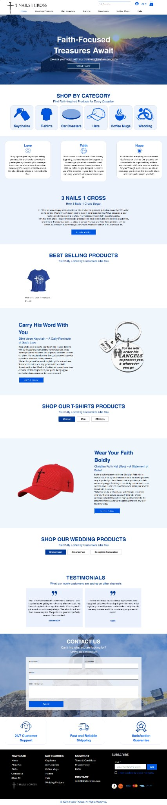

The challenge

← Back to Work
Faith brand · Ecommerce
3 Nails 1 Cross
For a mission-led ecommerce brand, the story and the store should strengthen each other instead of competing for attention.
Platform usedWix
Project typeFaith brand · Ecommerce
The story behind the build
The brand story and the store needed to strengthen each other.
3 Nails 1 Cross is a mission-led ecommerce project, so the website could not behave as if the story and the products were two unrelated things.
I used Wix to keep shopping practical through clear categories and predictable purchase actions, while giving the brand meaning enough presence to explain why the products exist.
The finished experience lets shoppers understand the mission and move naturally into product discovery without one side slowing down the other.
What I changed
- Integrate story with shopping instead of separating them into unrelated experiences.
- Keep product categories practical.
- Make purchase actions predictable.
- Use the visual system to keep brand meaning present without slowing down shopping.
Where it ended